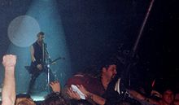

 Roku 1995 James a Lars začali pracovat na novém albu; i když předem věděli, že nebude jako předchozí. Lars chtěl, aby kapela „stárla s hrdostí“. V té době udělala Metallica na metalovou skupinu revoluční počin: všichni si ostříhali vlasy (Newsted tak učinil již roku 1992). Skladby, které tentokrát nesly místy až bluesový, countryový, nebo hard rockový feeling, byly hotovy už v dubnu, ale celé nahrávání trvalo rok. Album Load vyšlo u Polygramu v červnu 1996, nahrávalo se v The Plant Studios v Sausalitu, nedaleko San Francisca pod vedením Boba Rocka. Při práci na albu vzniklo něco kolem třiceti skladeb, na Load se ovšem dostalo jen čtrnáct z nich.
Mezitím bylo nahráno pokračování Loadu: ReLoad. Album opět vzniklo ve studiu The Plant mezi květnem 1995 a únorem 1996 a od července do října 1997. Mixovalo se tamtéž v září a říjnu 1997. Kapele na desce hostovala zpěvačka Marianne Faithfull (v písni „The Memory Remains“). Turné propagující tato dvě alba trvalo až do října 1998.
14. října, den po koncertě v San Diegu, se Metallica znovu vrátila do studia, aby nahrála nové písně na své další album. Garage Inc. vyšlo 23. listopadu 1998, které obsahuje všechny dosud nahrané coververze Metallicy a navíc 11 nových.
7. prosince 1998 byly vydány i videokazety, dokumentující koncerty ve Fort Worth v Texasu (8. a 9. května 1997). Režisérem byl Wayne Isham. Koncert, nazvaný Cunning Stunts byl rovněž vydán na dvou discích DVD, stal se tak prvním DVD skupiny.
V lednu 1999 kapelu kontaktoval dirigent a skladatel filmové hudby Michael Kamen. Navrhl, jestli by Metallica nechtěla nahrát pár koncertů se sanfranciským symfonickým orchestrem.
21. a 22. dubna 1999 se v Berkeley Community Theatre v San Franciscu uskutečnily dva koncerty. Na koncertech zazněly skladby ze všech alb, mimo alba Kill 'Em All. Metallica vydala záznam z těchto koncertů na albu S&M. Vyšlo 22. listopadu 1999 na dvojcédéčku. Koncerty natáčel i tým režiséra Wayneho Ishama, a tak je koncert dostupný také na videokazetě a DVD. Metallica při příležitosti vydání alba odehrála ještě další dva koncerty s orchestry – 19. listopadu v Berlíně a 23. listopadu v New Yorku. Album obsahuje dvě nové skladby – pomalou „Human“ ([majnus hjumn]) a „No Leaf Clover“, která je typickou metalovou baladou; jemné pasáže se střídají s tvrdšími. S tímto albem Metallica překonala další bariéry a původní představy o tom, co je a co není Metallica.